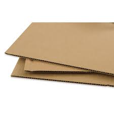
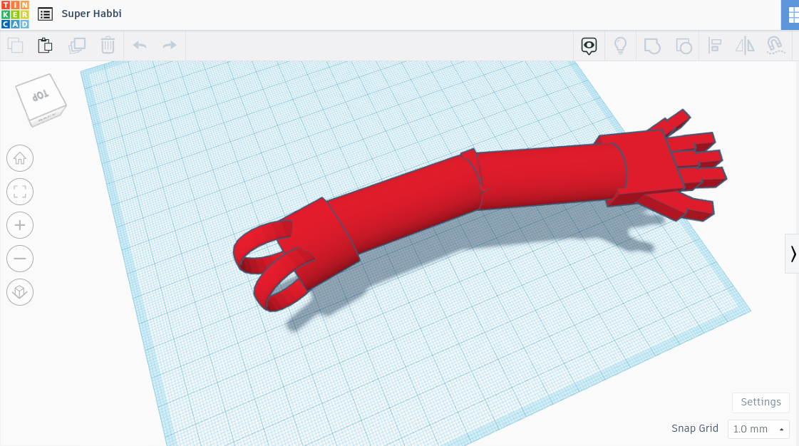
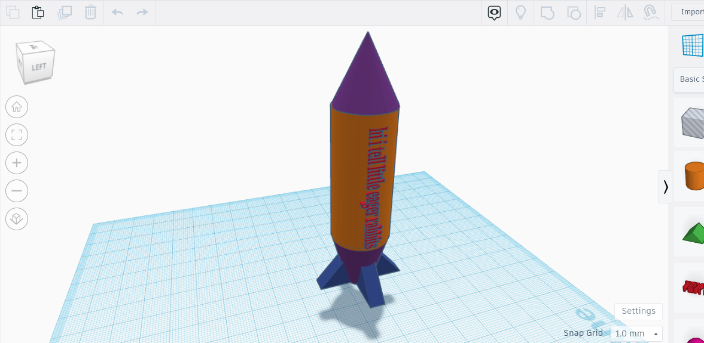
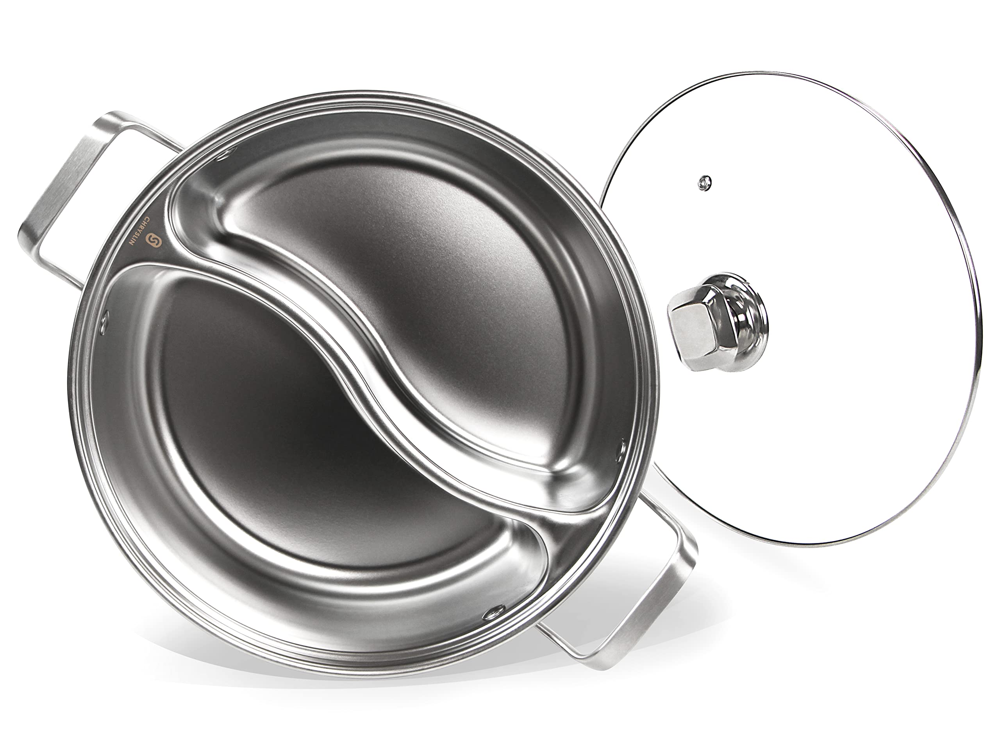

Evan's Website

8/20/23 - The first week of Intro to Engineering was kind of fun and I learned a bit. The first day we set tried to set up the websites and AWS, but it had many issues and the source we were using was outdated. We spent about 3 or 4 classes setting up everything and on this day, 8/24/23, we finished setting everything up. The first thing we did was do a group activity of using PVC pipes to try to get a marble into a cup, without the marble moving backwards, and the PVC pipes cant overlap and if the marble touched the ground or we did any of the things we weren't supposed to do, we had to go back to the start. The class was split up into 2 groups to do this activity, it was fun even though none of the groups suceeded on getting the marble into the cup. I learned how to set up AWS and github. I also learned how to make a website using different headers, titles etc.

8/31/23 - This week we learned about Mechanical engineering. We took a quiz on it and I believe I did good. We also learned about using TinkerCAD and using
TinkerCAD I made a model computer, and a rube goldburg machine model. The rube goldburg machine model, we are going to turn it into an actual thing
using objects such as cardboard and string.

This week we started our rube goldburg machines and made them in person. Since we finsihed out tinkercad design of the machine, we were able to start
making it using materials we were giving. We also had a quiz that I felt like I did good on. We were using exacto knives on the machine and we didnt get
much done because we didn't have much time to do it. So far all we have done is cut out most of the carboard of the machine used for the skeleton of it.
We also taped some parts together, such as a leg and a ramp.

This week we finsihed our rube goldburg machine! We added a couple of unexpected things to it due to the fact that we didn't have enough "aspects" to the build. That means we had to have 3 parts, such as what we used, wheel, inclined clope and a lever. For the inclined slope we made a ball roll down it, roll down another one, and run into a car, which is the wheel aspect. Then the car ran down another slope and hit a lever, which on the end of the lever had a needle to pop the balloon which was our objective.
This week we worked on 2 engineering challenges. The first of the two challenges we had to create a paper boat using 1 piece of paper and scissors. We had to make it hold the most weight, but it had to float on water for 5 minutes. The person who held the most weight and their boat also survived all 5 minutes won the competition. Sadly, you didn't get anything for winning. The second challenge we had to create the letter "E" and write it down on a piece of paper and add demensions to it. We then, mixed around the "E"s and gave it to a random person to recreate. You had to recreate a random "E" that you got and make the exact demensions. The last day of the week we took notes on computer engineering and the components involved with it.
This week we took apart a computer learing the inside of it. I knew a lot of the parts of the computer and it was fairly easy because I already know about computers, but none the less it was still fun. We took apart a school office pc that looked old and had parts that I've never seen or heard of. We had to follow instructions on how to take apart the computer, so we wouldn't break it or loose any parts. When we were done taking the computer apart we had to put it back together. The last thing we did this week was take a test on the computer parts. I feel like I did pretty good on the test not knowing just 1 question.
This week we did a lot about prosthetics and bioengineering. We took a bit of notes about bioengineering and the other units related to it. Also, we worked on a prohect making
a cardboard prosthetic hand, and our objective was to pick up a empty plastic water bottle. The challenge was kind of hard, but me and my partner were able to manage it and worked
through it and completed the project. Lastly, we had to create a prosthetic limb in tinkercad for any animal of our choosing. I chose the human for my naimal and created a prosthetic
arm. I made it so it would attach to a nub on the shoulder.

This week we learned about aerospace engineering and the mechanics to it. I learned that first, aerospace enginerring is very hard and you need to learn many other things
to be good at aerospace enginerring. We also designed a bottle airplane/rocket, but I chose the rocket and made it in tinkercad. The rocket is simple and looks like a real rocket.
The thing we are going to be using the bottle rocket for is a launch. We launch the rocket once we are finished, by using pressure to launch the rocket/ airplane and see who's
airplane/rocket goes the farthest.

This week we made bottle rockets. Me and my partner, Noah, made a bottle rocket out of glue, cardboard and coke bottles. Our "rocket" took little time to make, making it in only 30 minutes. The rocket had 6 wings, which me and Noah originally thought to add 16 small wings, but settled on 6 big wings. Once we finsihed making it, on Thursday we launched our rockets having great success and getting second place. Our rocket did better than I anticipated and I had a lot of fun watching other rockets launch. The rockets used water and pressure to launch off. First you would fill the bottle up with some water and pressurize it using something, and all you had to do to launch the rocket is to let go of the pipe pressurizing the bottle allowing it to launch.
This week we learned the different aspects of environmental engineering and what people do to make the environment cleaner. Also we learned what makes the environment dirty and such. The next day we made a filter to make very dirty water clean. We used a combination of putting cotton balls, rocks, small rocks and sand inside a plastic water bottle to make the water clearer. The first time we put the very dirty water through the filter it cleaned it out a bit. But, the more times we put it through the filter the more clean it became. Despite how many times we put the water through the filter it still was kinda dirty. At the end the water was a piss yeollow color, but not the originla black/ brown color. We could have changed what we put on top of each other to make the water clearer.
This week we learned about circuits. We learned about reisistors, anodes, canodes and more. We also made a circuit board in tikercad. It was composed of a battery, connecting lines, reisistors and LEDS. The topic we are learning about is kind of complicated. Learning how and where to put the parts of a circuit board to make the LED light up is kinda of hard. We also did a worksheet about Electrical engineering. I learned about current, voltage and more in the category of Electrical Engineering.
This week we worked on circuits, building them on a breadboard which is the object that connects the circuits and makes things run. We had to work on 2 different labs, lab 3 and 4. Each lab was a different challenge on what we had to construct on the breadobards using resistors, LEDS and more. For lab 3 we had to make a circuit combination that made the LED turn on, and we also had to make 3 LEDS turn on. For Lab 3, at the end, we had to measure the voltage of the cirucit components and write it down on a piece of paper recording our measurements. After we were done with Lab 3, we moved on to lab 4, which we had to use an arduino board which connected to the breadboard. The arduino board helped the breadboard do stuff it couldn't do on its own. We had to code the arduino board to make 3 LEDS on the breadboard flicker on and off in a certain pattern.
This week we learned about Business engineering and the aspects to it. Also, on the topic of Business Engineering, we learned what is related to it, what you do as a Business Engineer and how to become a Business Engineer. This week we also started brainstorming a shark tank idea. My group and I came up with an idea of making a self heating jacket that uses water to run it. We are still coming up with how it works completely and how we are going to present it. We also have to find out how much it costs to make, how much we are going to sell it for, and much much more. We are also thinking of other ideas to present to the sharks, just incase our self heating jacket doesn't work out.
This week we made a presentation on a item or something that we had to sell to the imaginary shark tank people. We had to pitch them an idea on something that we wanted them to invest in. We had to
make slides on how much it costs to make, how much we sell it for, how much we have already sold and how much we made, who are we trying to sell the product to and about the product. Our group decided
on making a pot that is able to make multiple different food because in the middle of it there is a divider dividing the different foods you can make. My favorite pitch by a student was a measuring tape
thing. I forget what it was called, but the way it worked was that you had 2 pins that you could place anywhere and there was a little device telling you how fare away those pins are, making it a very effective
measuring tape. It didn't cost much and the way they pitched it was very good. Also I would buy the measuring tape thing anytime because of how useful it is.

This week we started making a pasta bridge for our final. We had to make a bridge out of a certain amount of pasta with 3 other group members. The task was challenging because using that pasta we had to make a sturdy bridge that could hold up as much water as possible. And whoever heled up the most water in a bucket with their bridge would win, but there was no prize sadly. First, to start making the bridge our group went into tinkercad and made a model idea of the bridge we were making. Also, we had to make 2 bridges the second bridge adding onto the first one and improving it. Once we were done maiing the 2 models on tinkerCAD we were giving a sheet to do the work on, glue, exacto knives and pasta to construct our bridge. It took a very long time to make the 2 bridges due to the fact that there was a limited amount of space and the glue took a very long time to dry. But our group prevaled through those obstacles and finished the 2 bridges. Once we were done, we had to bring the bridges outside and attach a water bucket to the bridge. My group and I had one of our bridges hold 3800 grams of water which is perspective is about a full medium-ish bucket of water. I was suprised om the fact that our bridge looked so bad and so weak but it managed to hold so much water. This challenge was fun but had many difficulties within it, but overall I had a lot of fun.
This week I just got back from winter break. My break was fun but, i gotta talk about waht I did this week. First we learned about chemical engineering and the paths you can take to get to it. The jobs you can do when you do chemical engineering is a lot. The variety of jobs there are and the jobs that need a chemical engineer is a lot to. Chemical engineering is a pretty cool career path. But, after I learned about that, we moved onto a project on making something called oubleck or i believe that is how you spell it. Anyways, it is a clay or slime type substance that is liquid when you dont play with it and hard when you play with it. It required corn starch and water to make. You added the two together and mixed it as best as you can and it would make the oubleck.
This week we started a bit of work on our next project, the mousetrap car. This project will take weeks to perfect and make, so to start off we had to make a project proposal to get it started. We had to list out the materials we are going to use for it and how we are going to make it, and more about the makers and the car. We had to research about the best way to make the car and me and my partner, diego came up with a mousetrap car that used 3 wheels instead of 4 and we were going to incorporate some other designs onto it to make it even better. We also learned about the best ways to make the mousetrap car which was pretty cool considering how much you can do with just a single mousetrap car.
This week we are working on our mousetrap car more. The design me and my partner agreed on is with 3 wheels and goes pretty far. We had to calculate the design and a lot about the mousetrap car to see how far it will go, the most effective way for the mousetrap car to run, and more. The calculations were pretty hard and I didnt do everything but I beleive everything is going to work out. Tomorrow on tuesday me and my partner are going to start building the car. I am looking forward to building because I like to build contraptions and such. The moustrap car design We chose is pretty good and will go decently far. We also had to make a tinkercad design of how our car will look.
This week me and my partner finished making our car. We measured all of the things we had to and it turned out pretty good. A big challenge was making the wheels not wobble. We spent the majority of the time fixing the wheels and making the car go straight. We had a lot of fun making this car and I would recommend this to anyone who loves to build and such.
This week me and my partner tested our car. Our car went 26 feet and our predicted length was 8feet. We found our percent error by doing this equation; %Error= 4.5ft-63-53/53=0.19 x 100% which gets me and my partner a 19% error. Which is a big margin, but on our next car we will improve our mistakes. Some mistakes on our car was that our wheel was wobbly and our car didn't go that straight. Also the rod wasn't long enough causing the car to not go that far. We could improve these flaws by first, making and finding a better axel so our wheels don't wobble. Secondly, to fix our car going straight we need to make the wheels not wobble and stay straight on the rod. Lastly, We could just make the rod longer to have our car go farther. Next time me and my partner will make our second car, improving and learning from our mistakes.
This week we found the flaws and fixed them. We made the rod longer which made the car go farther and we made the string better which also helped. Also, we fixed the wheels and they were straight and they didn't wobble. When we tested the car the second time it went 62 feet. The calculations were PERCENT ERROR=63-62/62=0.02 x 100 = 2% which is a 2% error which is really good. Sadly after we tested it a couple times it broke, so now we have to fix it or build an entirely new one because we have to test the car live in a couple days.
This week we tested our car live. I would say it could have gone better, but overall it went decent. Our car went 32 feet which wasn't as good as before due to the fact that our car broke prior to this event. It underpreformed by about half of what was expected sadly. Me and my partner, Diego, would improve the car further, but we cannot because this project is over and we will be switching over and doing something else. Also, if me and my partner had more time we would make the rod and the string longer because the length of the rod and string really mattered. Also making the car body longer would help compensate the extra rod lenght. Also I would improve the wheels more because the axels we had were homemade and not that good. They were just pieces of cardboard and tape with a hole in it to hold the rod with the wheels attached. Because of this, the wheels wobbled a lot and the car turned quite a bit. Overall, our car unpreformed because it was broken, and we expected it to go at least 60 feet instead of 32 feet and we would make the rod, string and body longer and would improve the wheels.